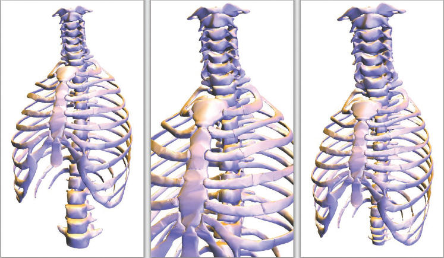

|
Focus+Context Visualization with Distortion Minimization Yu-Shuen Wang1, Tong-Yee Lee1,Chiew-Lan Tai2 IEEE Transactions on Visualization and Computer Graphics (Proceedings of IEEE Visualization 2008), Vol. 14, No. 6, Nov. 2008 1National Cheng Kung University, Taiwan 2Hong Kong University of Science & Technology ¡@ (left) Original view of the thorax model. For a detailed observation of the cervical vertebra, an intuitive approach is to shorten the distance between the model and the camera. However, the other regions, such as the lower part of the spine, will be clipped off due to the limited screen space (middle). In contrast, our method magnifies the focal region whilekeeping the entire model displayed on the same screen (right). |
Abstract |
The need
to examine and manipulate large surface models is commonly found in many
science,engineering, and medical applications. On a desktop monitor,
however, seeing the whole model in detail is not possible. In this paper, we
present a new, interactive Focus+Context method for visualizing large
surface models. Our method, based on an energy optimization model, allows
the user to magnify an area of interest to see it in detail while deforming
the rest of the area without perceivable distortion. The rest of the surface
area is essentially shrunk to use as little of the screen space as possible
in order to keep the entire model displayed on screen. We demonstrate the
efficacy and robustness of our method with a variety of models. |
Paper |
Focus+Context.PDF |
Video |
Video.mp4 |
More Results |
|
Bibtex |
@ARTICLE{Wang_Vis:2008, |
Acknowledgement |
We thank the anonymous reviewers for
their insightful comments that helps us improve the paper. We also thank
AIM@SHAPE Shape Repository, Stanford 3D Scanning Repository and Cyberware for the 3D polyhedral models used in this paper. This work is supported in part by the Landmark Program of the NCKU Top University Project (Contract B0008), the National Science Council (Contracts NSC-95-2221-E-006-193-MY2 and NSC-96-2628-E-006-200-MY3), Taiwan, R.O.C., the Research Grant Council of the Hong Kong Special Administrative Region, China (Project No: 620107). |
¡@